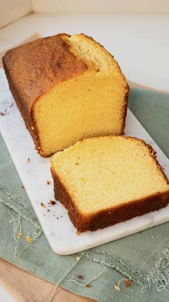

RECETA · PUBLICACIÓN
Budin
Budin grande (introduccion o resumen)

- Introducción / resumen
- Budin grande (introduccion o resumen)
- Ingredientes
- Manteca Azucar Huevos Harina
- Preparación
- Batir la manteca y el azucar, agregar los huevos de a uno, batir 4 minutos....
- Notas
- esto no tiene que salir en la pagina
- Dificultad
- mediaº
- Tiempo total
- 90 minutos